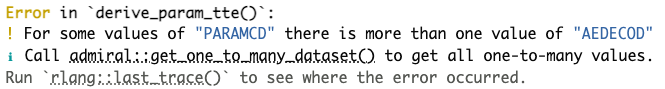
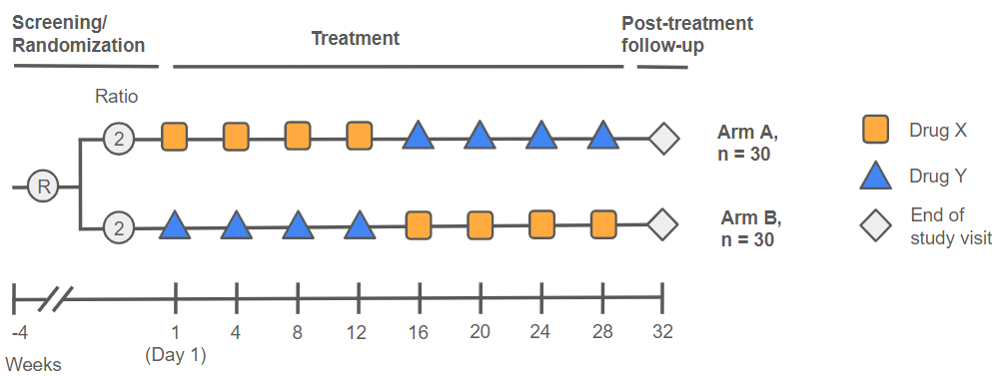
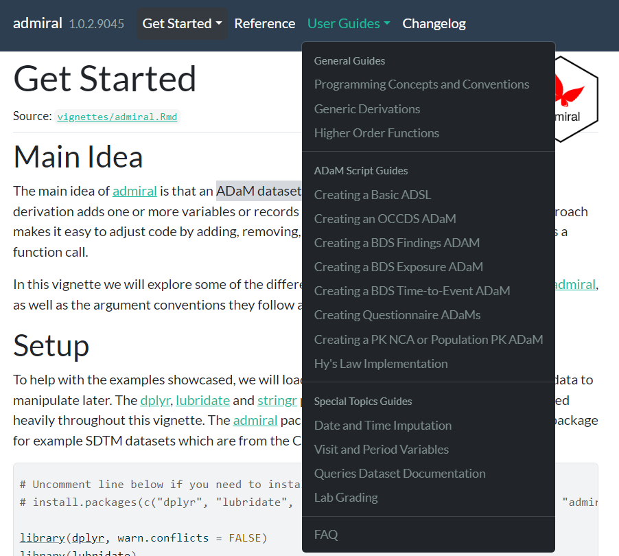

library(admiral)
library(dplyr, warn.conflicts = FALSE)
library(tibble)
library(tidyverse)
library(lubridate){admiral 1.1.1} is out on CRAN! Though it may seem like just yesterday that
This blog post will showcase some of the highlights of this release, but you can explore the full contents in our Changelog.
Setup
The examples in this post require the following packages:
Improved error messaging
Our marquee update for
- The name of the calling function appears on the top line to orient the user where the error is coming from.
- Color coding of words is now present so that the messages are easier on the eyes and easier to read.
- When applicable, the message is followed by an informative message (with the standard
iprefix) providing details on what to do to address the error. - Informative messages may include a hyperlink (🤯) of the code to run to get more details. Clicking the link will auto-run the code in your console and print the examples of incompatible inputs.
Try it out yourself by running the code below!
adsl <- tribble(
~USUBJID, ~TRTSDT, ~EOSDT,
"01", ymd("2020-12-06"), ymd("2021-03-06"),
"02", ymd("2021-01-16"), ymd("2021-02-03")
) %>%
mutate(STUDYID = "AB42")
ae <- tribble(
~USUBJID, ~AESTDTC, ~AESEQ, ~AEDECOD,
"01", "2021-01-03T10:56", 1, "Flu",
"01", "2021-03-04", 2, "Cough",
"01", "2021", 3, "Flu"
) %>%
mutate(STUDYID = "AB42")
ae_ext <- derive_vars_dt(
ae,
dtc = AESTDTC,
new_vars_prefix = "AEST",
highest_imputation = "M",
flag_imputation = "none"
)
ttae <- event_source(
dataset_name = "ae",
date = AESTDT,
set_values_to = exprs(
EVNTDESC = "AE",
SRCDOM = "AE",
SRCVAR = "AESTDTC",
SRCSEQ = AESEQ
)
)
eos <- censor_source(
dataset_name = "adsl",
date = EOSDT,
set_values_to = exprs(
EVNTDESC = "END OF STUDY",
SRCDOM = "ADSL",
SRCVAR = "EOSDT"
)
)
derive_param_tte(
dataset_adsl = adsl,
by_vars = exprs(AEDECOD),
start_date = TRTSDT,
event_conditions = list(ttae),
censor_conditions = list(eos),
source_datasets = list(adsl = adsl, ae = ae_ext),
set_values_to = exprs(
PARAMCD = "TTAE", # This is incorrect syntax! Not unique!
PARAM = paste("Time to First", AEDECOD, "Adverse Event"),
PARCAT1 = "TTAE",
PARCAT2 = AEDECOD
)
)
While we hope you don’t encounter too many errors and warnings while working with
New metadata object for ISO 3166 country codes
adsl <- tribble(
~USUBJID, ~COUNTRY,
"ST01-01", "AUT",
"ST01-02", "MWI",
"ST01-03", "GBR",
"ST01-04", "CHE",
"ST01-05", "NOR",
"ST01-06", "JPN",
"ST01-07", "USA"
)
adsl %>%
derive_vars_merged(
dataset_add = country_code_lookup,
new_vars = exprs(COUNTRYN = country_number, COUNTRYL = country_name),
by_vars = exprs(COUNTRY = country_code)
)# A tibble: 7 × 4
USUBJID COUNTRY COUNTRYN COUNTRYL
<chr> <chr> <dbl> <chr>
1 ST01-01 AUT 16 Austria
2 ST01-02 MWI 157 Malawi
3 ST01-03 GBR 80 United Kingdom of Great Britain and Northern Ireland
4 ST01-04 CHE 42 Switzerland
5 ST01-05 NOR 168 Norway
6 ST01-06 JPN 116 Japan
7 ST01-07 USA 235 United States of America If you were worried about having to type these up manually yourself, fear not as we now have you covered!
New helper functions for metadata-driven programming
Driven by a request from our GSK users, the
Enhancements to derive_var_trtemfl()
The function group_var. This allows users to derive Treatment Emergent Flags in Adverse Event ADaMs in the case where data are collected as one episode of AE with multiple lines. Indeed, if the argument is specified, AEGRPID. In particular, observe how the second of the four AEs with AEGRPID = 2 occurs while on treatment and marks a worsening of severity since AETOXGR increases by one. As such, that AE and the following one are flagged as treatment emergent.
adae <- tribble(
~USUBJID, ~ASTDTM, ~AENDTM, ~AETOXGR, ~AEGRPID,
# before treatment
"1", ymd_hm("2021-12-13T20:15"), ymd_hm("2021-12-15T12:45"), "1", "1",
"1", ymd_hm("2021-12-14T20:15"), ymd_hm("2021-12-14T22:00"), "3", "1",
# starting before treatment and ending during treatment
"1", ymd_hm("2021-12-30T20:15"), ymd_hm("2022-01-14T01:23"), "3", "2",
"1", ymd_hm("2022-01-05T20:00"), ymd_hm("2022-06-01T11:00"), "1", "2",
"1", ymd_hm("2022-01-10T20:15"), ymd_hm("2022-01-11T01:23"), "2", "2",
"1", ymd_hm("2022-01-13T20:15"), ymd_hm("2022-03-01T01:23"), "1", "2",
# starting during treatment
"1", ymd_hm("2022-01-01T12:00"), ymd_hm("2022-01-02T23:25"), "4", "3"
) %>%
mutate(
TRTSDTM = ymd_hm("2022-01-01T01:01"),
TRTEDTM = ymd_hm("2022-04-30T23:59")
)
derive_var_trtemfl(
adae,
new_var = TRTEMFL,
trt_end_date = TRTEDTM,
end_window = 10,
intensity = AETOXGR,
group_var = AEGRPID,
subject_keys = exprs(USUBJID)
) %>%
select(ASTDTM, AENDTM, AETOXGR, AEGRPID, TRTEMFL)# A tibble: 7 × 5
ASTDTM AENDTM AETOXGR AEGRPID TRTEMFL
<dttm> <dttm> <chr> <chr> <chr>
1 2021-12-13 20:15:00 2021-12-15 12:45:00 1 1 <NA>
2 2021-12-14 20:15:00 2021-12-14 22:00:00 3 1 <NA>
3 2021-12-30 20:15:00 2022-01-14 01:23:00 3 2 <NA>
4 2022-01-05 20:00:00 2022-06-01 11:00:00 1 2 <NA>
5 2022-01-10 20:15:00 2022-01-11 01:23:00 2 2 Y
6 2022-01-13 20:15:00 2022-03-01 01:23:00 1 2 Y
7 2022-01-01 12:00:00 2022-01-02 23:25:00 4 3 Y Improved Visits and Periods vignette
The Visits and Periods User Guide is one of

New Get Started vignette
In this release cycle, we took the opportunity to review and revamp our Get Started vignette. The new and improved version of this page now places more focus on showcasing the main idea of
New Programming Concepts and Conventions vignette
Coupled with the rework to the Get Started vignette, we now have a brand-new Programming Concepts and Conventions User Guide. Here, we aim to discuss some of the common programming concepts and conventions that have been adopted within the
User Guide Reorganization
We took the opportunity to reorganize how our vignettes are categorized on the website, in order to present them in a more intuitive and tidy arrangement. They are now split into General Guides, ADaM Script Guides and Special Topics Guides. You can now see the full new arrangement below:

Let us know what you think of the new vignettes and organization of the website!
What’s next for admiral and the admiral family?
So, what’s next for
On the package extension side, we have:
- New release of
Oncology Extension Package for ADaM in R Asset Library • admiralonco {admiralonco} (1.1) featuring a new vignette for creating ADRS with IMWG criteria (full changelog here). - New release of
ADaM in R Asset Library - Ophthalmology • admiralophtha {admiralophtha} (1.1) featuring improved ADOE, ADBCVA and ADVFQ templates (full changelog here). - Upcoming release of
Vaccine Extension Package for ADaM in R Asset Library • admiralvaccine {admiralvaccine} - further info TBC but you can take a look at our progress on our GitHub repo. - Upcoming first release of {admiralpeds} in July, focusing mainly on child growth/development charts.
- Team kickoff for {admiralmetabolic}, where we aim to provide tools for the cardiovascular and metabolism therapeutic area. Our first release is scheduled in approximately six months time.
As you can see, progress in the
Last updated
2024-06-20 15:10:06.224642
Details
Reuse
Citation
BibTeX citation:
@online{mancini2024,
author = {Mancini, Edoardo and Straub, Ben},
title = {\{Admiral\} 1.1.1 Is Here!},
date = {2024-06-20},
url = {https://pharmaverse.github.io/blog/posts/2024-06-07_admiral_1.1_is.../admiral_1.1_is_here.html},
langid = {en}
}
For attribution, please cite this work as:
Mancini, Edoardo, and Ben Straub. 2024. “{Admiral} 1.1.1 Is
Here!” June 20, 2024. https://pharmaverse.github.io/blog/posts/2024-06-07_admiral_1.1_is.../admiral_1.1_is_here.html.